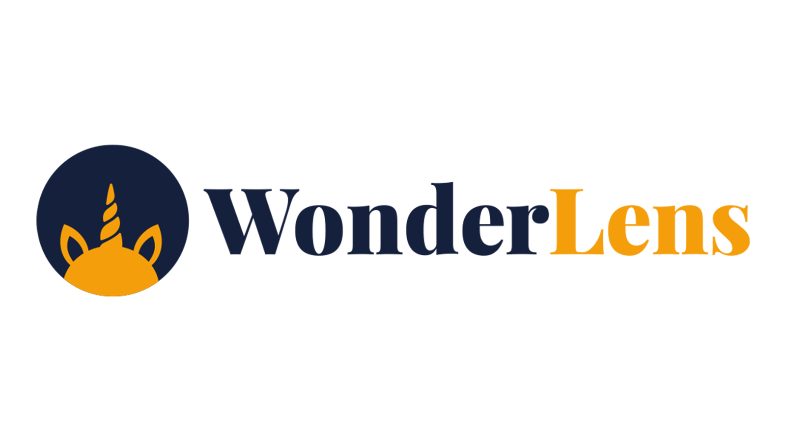
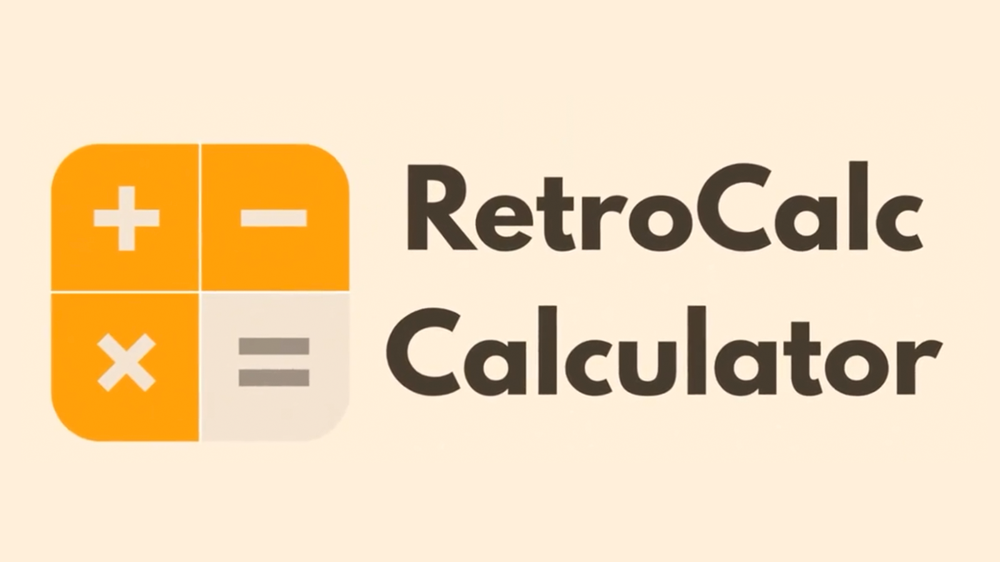

TAM RIO LABS / EST. 2024
PROUDLY BUILT IN MARIN

We build magical digital experiences.
Current Projects

WonderLens
Upload a photo of any room and watch fantasy characters come to life in your space with AI-generated video.
wonderlens.ai ↗
Web

RetroCalc
A retro-styled calculator built for Meta Quest. Simple, nostalgic, and fun — right on your virtual desk.
Meta Quest Store ↗
Meta Quest